The boot splash. Under it, the kernel writes a line for each step, the way Linux
distributions do; any key shows them.
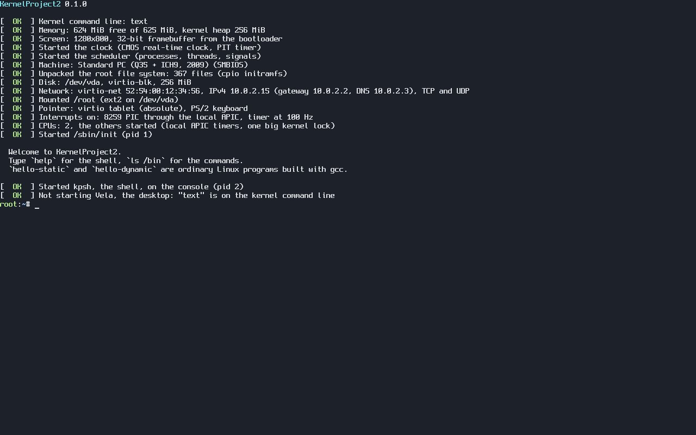
The boot messages, with "command line only" picked in the boot menu.
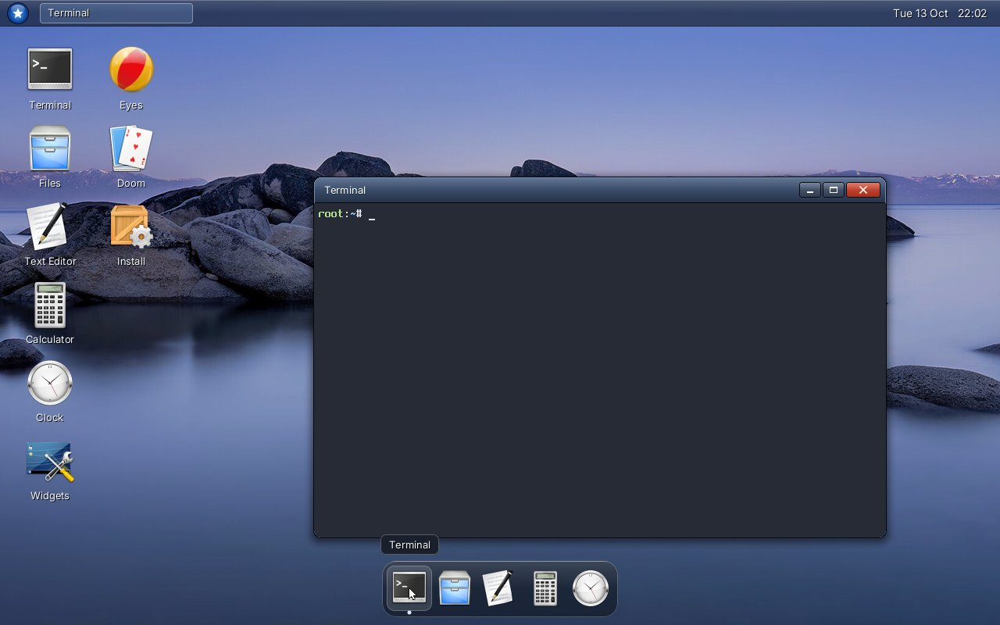
Vela, the desktop: glass bar and dock, KDE's Oxygen icons, and window frames after
Windows Vista. Wallpaper: Lake Tahoe by John D., CC BY 2.0 (all credits are in
/usr/share/backgrounds/CREDITS.txt).
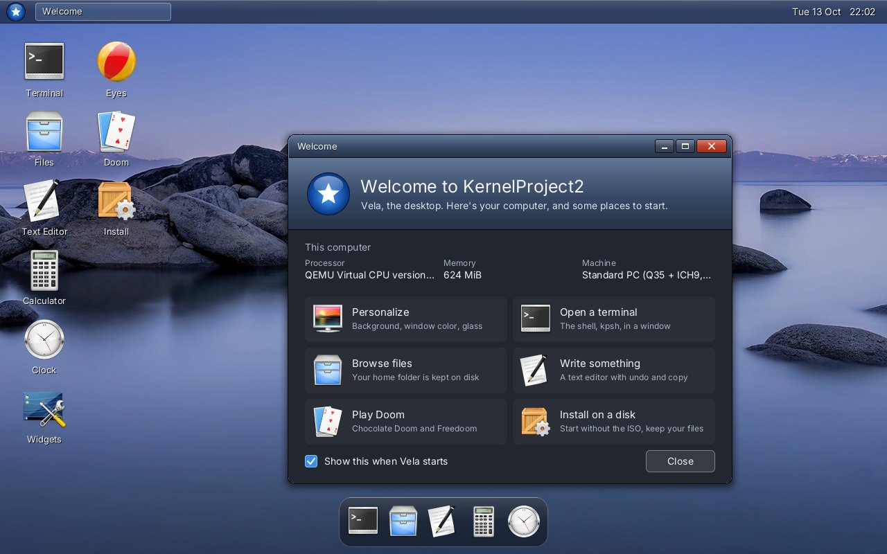
The Welcome window, when Vela starts.
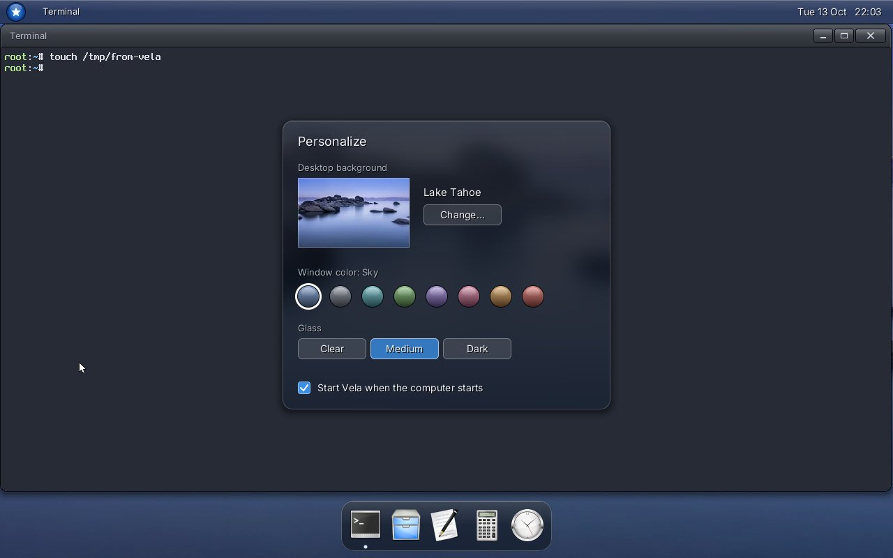
Personalize: the background (15 photos to pick from), the window color, how
clear the glass is, and whether Vela starts at boot.
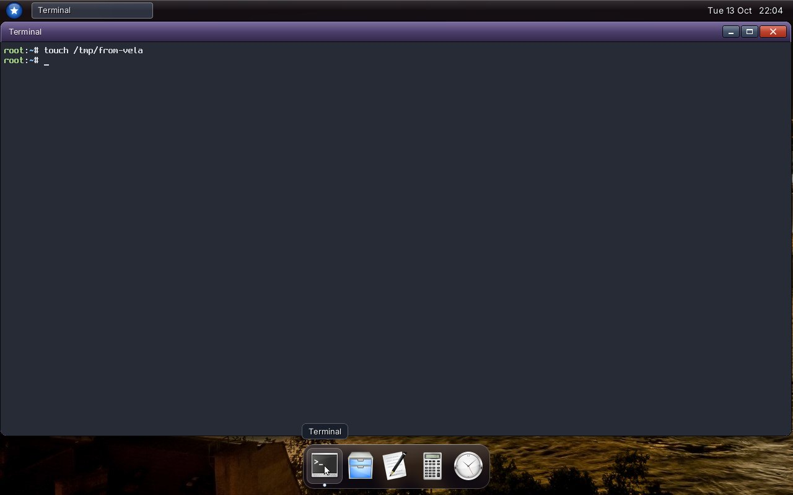
The Violet window color on a maximized terminal, and a dock tooltip.
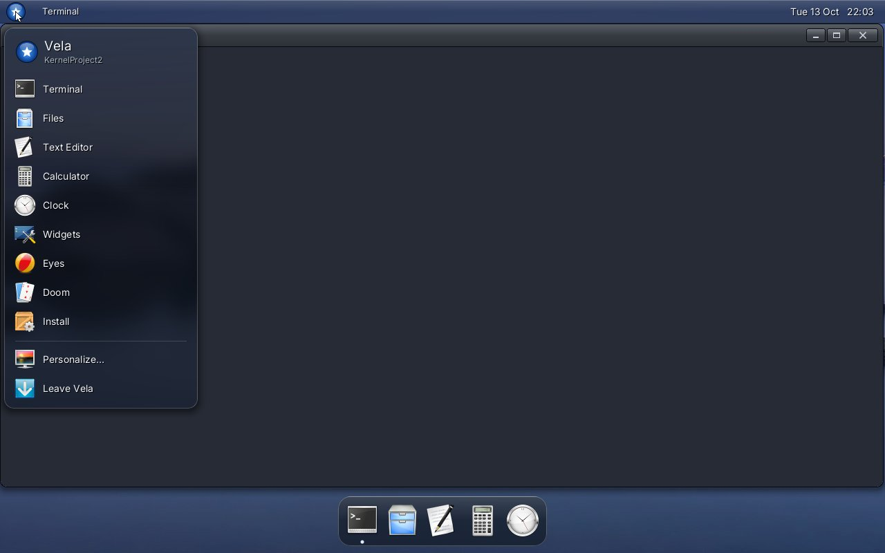
The star menu.
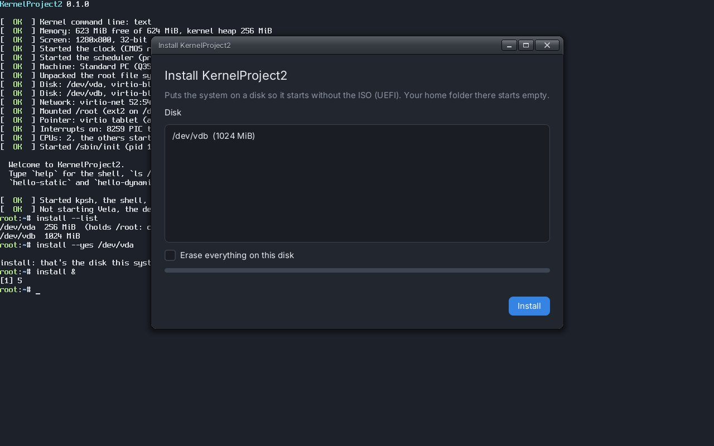
The installer. It won't offer the disk your home folder is on.
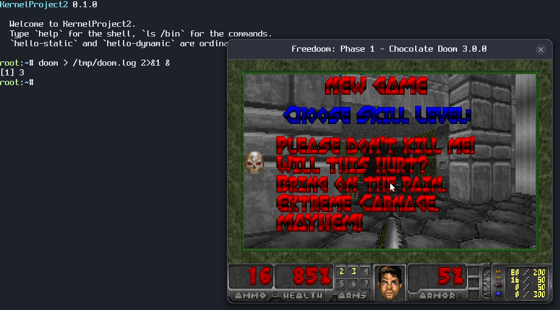
Chocolate Doom, started from the shell with doom &. It's Ubuntu's
build, drawing through an SDL 2 video driver written for KernelProject2.
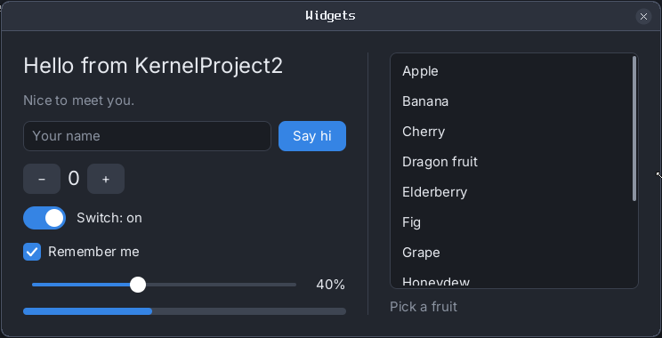
The toolkit's widgets demo. The toolkit and its font renderer are written in Zig.
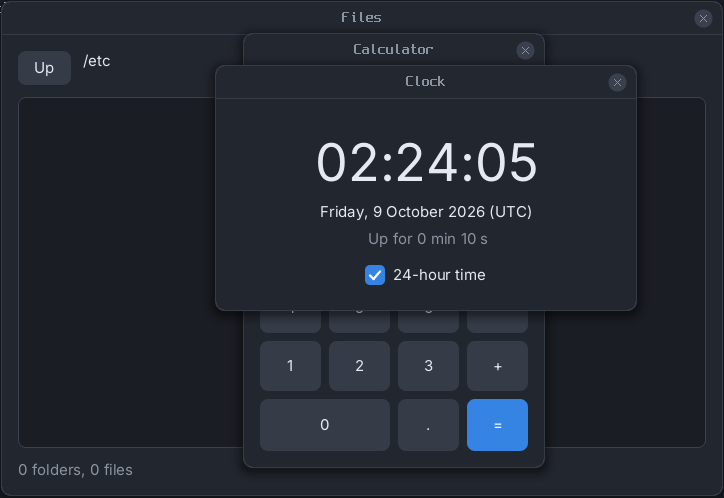
Files, Calculator and Clock, open together.
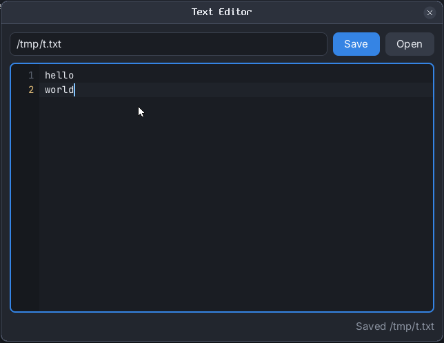
The text editor, just after saving /tmp/t.txt.
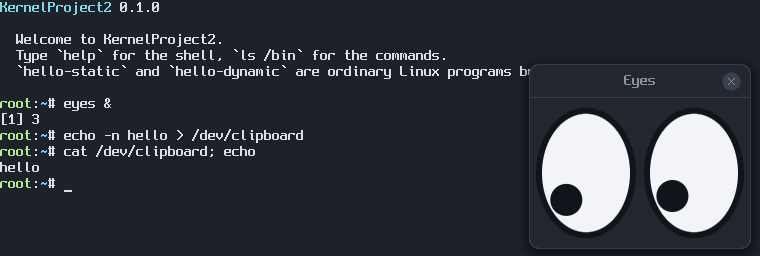
Eyes, which watch the mouse, and the clipboard, which is a file:
/dev/clipboard.